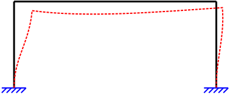

Pórticos
Idealização
O objeto estrutural da imagem a seguir é o seu objetivo:
Pórticos para sinalização viária vem sendo empregados no Brasil com a modernização de concessão de rodovias para o suporte de placas de aviso dinâmicas aos motoristas. São estruturas metálicas com ligações rígidas nas bases e entre as vigas e colunas.
Esse pórtico em específico possui o mesmo perfil nas colunas e na viga, tubular retangular de 400x200 mm e 12,5 mm de espessura da parede, com a maior dimensão (direção do eixo y da seção) perpendicular na viga e nas colunas. As propriedades da seção são $A = 143,75 cm^2$, $I_x = 9918,62 cm^4$, $I_y = 29762,37 cm^4$, $Z_x = 991,86 cm^3$, $Z_y = 1488,12 cm^3$, $J = 22951,87 cm^3$ e $\rho_l = 113 kg/m$ (massa por unidade de comprimento). O pórtico tem a largura de 9,4 m e altura de 4,7 m. A placa pesa 300 kg tem o comprimento de $4,0 m$ e está a $d = 4,2 m$ da extremidade direita a carga de uso, $q$, é de 2,0 kN/m e a carga de vento vale $v = 465,87 y^{0,2}N/m$ sendo $y$ variando na altura do pórtico. Deve-se considerar o peso próprio da estrutura. Toda a estrutura é de aço A36 ($E = 200 GPa$).
O primeiro passo é a idealização estrutural, ou seja, transformar uma estrutura física real em um modelo idealizado representativo dos efeitos que ocorrem, ou irão ocorrer, na estrutura real. Como se trata de um pórtico simples, podemos idealizar da seguinte forma:

Então, basta aplicar as cargas permanentes de peso próprio, acidentais de uso e o vento e obter os esforços e os deslocamentos.

Mas, como calcular os deslocamentos? Bem, vamos resolver usando o Método dos Elementos Finitos, então precisamos de um único elemento que seja representativo dos efeitos das colunas e da viga do pórtico. Além disso, olha a carga na viga, lembra de alguma coisa? Mas dessa vez vamos resolver discretizando aquela viga em apenas um elemento de pórtico.
Vamos começar pela teoria!